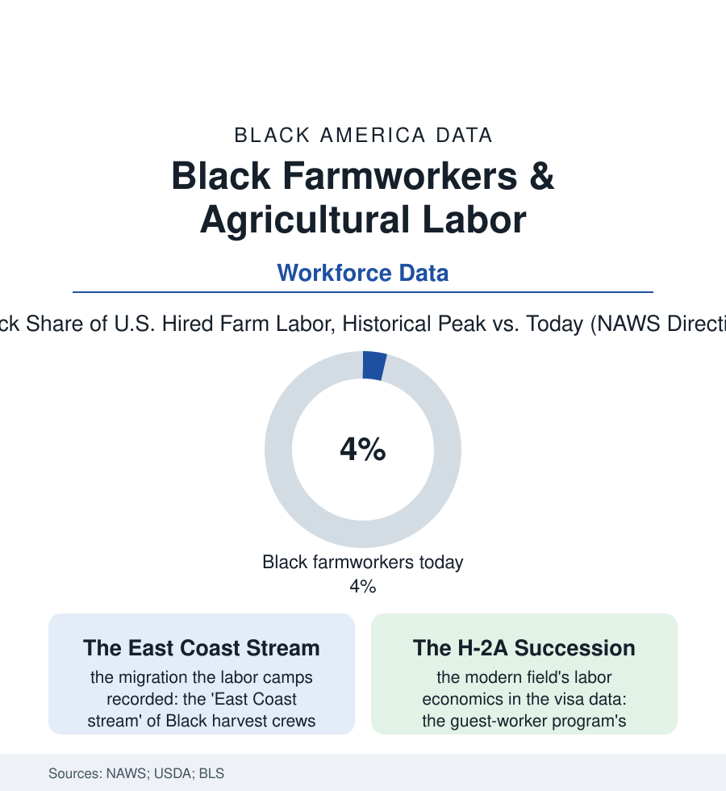

Black Employment
The Field Hands' Ledger: Black Farmworkers and Agricultural Labor
Before the factory there was the field — and the hired hands who harvested America's food were, for a century, substantially Black. The farm labor file.

The first workforce of Black America was the field — enslaved, then sharecropped, then hired by the day and the piece — and the hired farm labor force remained substantially Black well into the living memory of the harvest towns' elders of the region. Its modern count is a fraction of its history, and the succession that replaced it is one of the American labor market's most complete population exchanges. This article reads the farm labor file.
The Streams
The mid-century geography survives in the Labor Department's own reports: three great migrant streams worked the nation's harvests, and the East Coast stream — Florida's citrus and cane northward through the Carolinas' tobacco and peaches to Long Island's potatoes and New York's apples — was historically the Black stream, its crews recruited from the rural South's towns, housed in the labor camps whose conditions the era's documentaries made infamous (the 1960 broadcast 'Harvest of Shame' filming substantially the Black and Puerto Rican crews of the Florida fields, the muck of Belle Glade standing in the record as the stream's capital). The work's terms wrote the labor file's floor: the piece rates, the crew leader's cut (the labor contractor system the farmworker file shares with the day-labor corners of the modern city), the exemptions carved at the New Deal's founding — agricultural labor excluded from the minimum wage's first decades, from overtime still, from the collective-bargaining statute entirely, the occupational exclusions of the 1930s whose racial arithmetic the historians have long since itemized and whose remnants the wage data still price. The union chapter ran uphill against that structure: the Southern Tenant Farmers' Union of the 1930s — interracial in the Delta against every custom — the citrus and tobacco locals, FLOC's later Midwestern campaigns, the UFW's California movement whose membership's edge included Black organizers in the record its own histories sometimes slight. What mechanization began — the cotton picker emptying the Delta of its labor demand within a generation, the tomato harvester following — the labor market's succession completed.
The Succession and What Remains
The modern NAWS interviews draw the field's new portrait: a hired farm workforce overwhelmingly Latino and substantially foreign-born, its Black share fallen to the low single digits — concentrated in the Southeast's remaining hand-harvest pockets (the tobacco barns' last crews, the sweet potato and greens fields, the blueberry and peach sheds of the packing file) and among an older generation in the survey's age rows, the stream's grandchildren having taken the migration's final exit into the towns and the service file. The mechanism in the labor studies is double and undisputed in direction: the wages and conditions the domestic workforce would no longer accept at the offered price — the piece rates' stagnation across the decades in the USDA series — and the guest-worker program's expansion supplying the alternative (H-2A certifications growing from tens of thousands to several hundred thousand positions in the program data, the visa's tied-to-one-employer structure setting the field's effective wage ceiling wherever it operates). What remains distinctively on the Black side of the ledger: the farm-labor housing's legacy communities (the former camp towns of the muck and the shore, their churches and schools the stream's permanent deposit on the map), the farmworker-health file's Black chapter (the pesticide and heat data's oldest American cohort), and the legal memory — the farm labor contractor registration and migrant housing statutes written, in their first drafts, over the conditions of the East Coast stream's camps. The field made the first American workforce of this atlas. The data record its handover, crop by crop, to the next people's hands — the oldest story in the labor book, told this time in NAWS interviews and visa counts.
Reading the Farm Labor Data
The farm labor file is the employment section's root: the work from which every other workforce in this atlas departed, and the standard against which their wages and protections were first measured and found missing. The Department of Labor still interviews the fields each season. The crews it finds there speak Spanish now — and the camps' older ghosts, in the muck towns' cemeteries and churches, keep the earlier ledger.
More in Black Employment
The Black Unemployment Rate: The Two-to-One Pattern
Black unemployment runs at roughly twice the White rate — 5.5 percent against 3.3 percent in annual averages — a ratio stable across five decades of federal data. How it is measured and why it persists.
Black Median Weekly Earnings: The 80-Cent Ratio
Black full-time workers earn a median of about $900 a week — roughly 80 cents for every dollar White workers earn. The BLS earnings data by group, gender, and occupation.
Black Labor Force Participation: Working at National Rates
Black labor force participation runs at roughly the national rate — and Black women participate at higher rates than White women. The BLS participation data.
Source: National Agricultural Workers Survey (U.S. Department of Labor); U.S. Bureau of Labor Statistics; U.S. Department of Agriculture farm labor data; Farmworker Justice research.